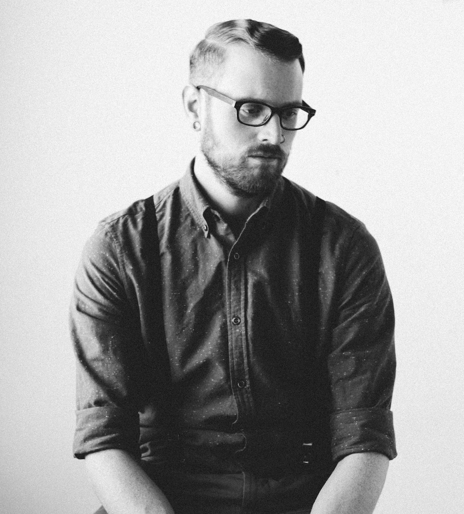

I build things. Sometimes with a team of 150 people, sometimes in a room alone.
Whether I've got a team or it's just me, the job is the same: figure out what the project needs, then do whatever it takes to finish it. 15 years of getting things done.
Most recently at the Red River Métis National Heritage Centre, where I coordinated exhibit design, built and deployed the Shoebox archive app from the ground up, and led digital exhibit development.
The thread through everything: finding the thing that needs to exist, then figuring out how to make it real with the resources available.
When I'm not working, I'm usually elbow-deep in some side project or another.
CTV News Winnipeg — Métis artist discusses heritage and craft · Watch on YouTube ↗
CTV News Winnipeg — Métis woven sashes on display · Watch on YouTube ↗
- Shoebox V2 — expanding the archive, adding new collections and search features
- Homeland Map — refining historical layers and adding migration pattern animations
- West and Back — developing new scenarios and polishing the pixel art pipeline
- Wilting Flower — building an interactive kinetic sculpture that blooms when you approach
- Role Program Coordinator — RRMNHC
- Base Winnipeg, Manitoba
- Focus Ops, Project Leadership, Digital Innovation
- Experience 15+ years
- Education Business Administration, Red River College